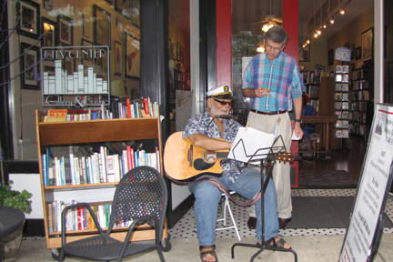

th
riday
at CCG&B
Women's Night Out
City Center Gallery & Books will participate in the Women’s Night Out suffrage celebration on Aug. 26, sponsored by the Fayetteville chapter of the National Organization for Women. Advanced copies of "A Woman's Crusade: Alice Paul and the Battle for the Ballot" by Mary Walton will go on sale in the afternoon
Ms. Walton will be available to sign books with a receipt from City Center Gallery & Books for at the Rainbow Room beginning at 6 p.m. She then will be at City Center Gallery & Books to sign copies from 8 to 8:30 p.m.
A suffrage parade march from the Market House to Ray Avenue and a presentation of the film "Generation M: Mysogyny in Media and Culture" at the Cameo Art House Theater also will be held. Proceeds from the film will benefit the Rape Crisis Volunteers of Cumberland County.
Other suffrage observances will include The Soap Box Suffragist performing outside the steps of The Arts Council throughout the evening, works of women artists on display by Cape Fear Studios, Arts Alive, in the parking lot of the Fayetteville Area Transportation and Local History Museum, and collections for the Fayetteville Urban Ministry food drive.
Photos from Recent Months
Click the image to enlarge.
 |
|
| September - Susie Godwin talks about the art she and co-artist Lisa Lofthouse create as Winhouse. | June - Thad Mumau talks to his daughter Laura before the book signing. |
|  | |
| May - Randy Holliday takes a break from performing to talk to Hank Parfitt. | May - Mary Helen Cole signs her book, "I Remember When...", for a customer." |
{kind=link}
{kind=link}
{kind=link}